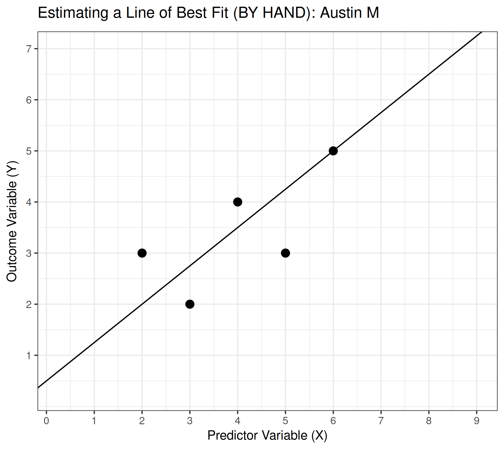
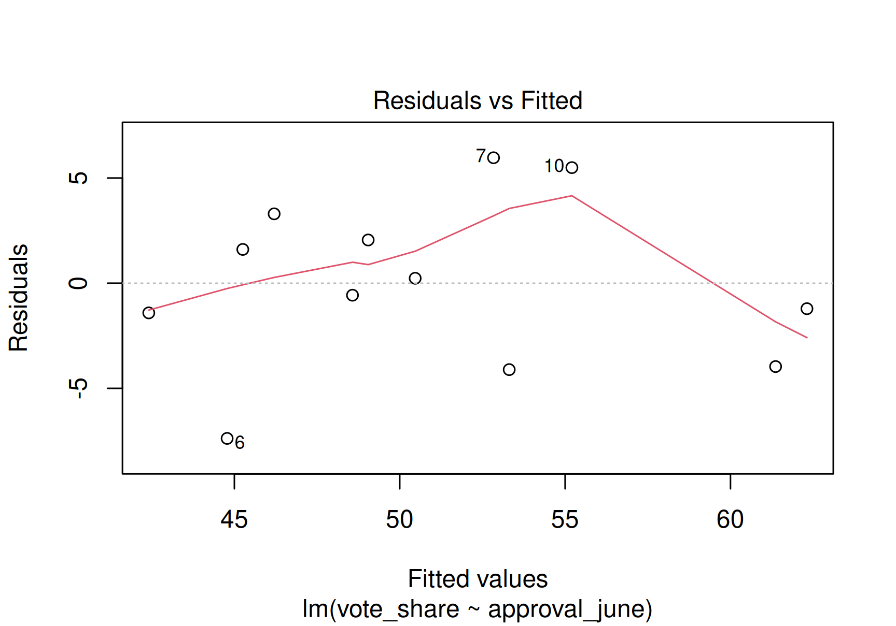

Coin Flip 3: Possible Paths

- H, T, T = -1
- T, H, T = -1
- T, T, H = -1
- H, H, T = +1
- H, T, H = +1
- T, H, H = +1
- T, T, T = -3
- H, H, H = +3
Evaluating an OLS Regression
3. How much of the outcome is explained by the model?
| Diamond Value | |
|---|---|
| Size (carats) | 7756.43* |
| (14.07) | |
| Constant | -2256.36* |
| (13.06) | |
| Num.Obs. | 53940 |
| R2 | 0.849 |
| R2 Adj. | 0.849 |
| RMSE | 1548.53 |
| * p < 0.05 | |

Evaluating an OLS Regression
3. How much of the outcome is explained by the model?
| Diamond Value | |
|---|---|
| Total Depth | -32.64 |
| (37.07) | |
| Constant | 5997.75* |
| (2290.32) | |
| Num.Obs. | 5394 |
| R2 | 0.000 |
| R2 Adj. | 0.000 |
| RMSE | 4002.45 |
| * p < 0.05 | |

Evaluating an OLS Regression
4. Is there a problem in the residuals?

Evaluating an OLS Regression
4. Is there a problem in the residuals?


| (1) | |
|---|---|
| Approval in June (%) | 0.47* |
| (0.09) | |
| Constant | 27.25* |
| (4.87) | |
| Num.Obs. | 12 |
| R2 | 0.716 |
| R2 Adj. | 0.688 |
| RMSE | 3.81 |
| * p < 0.05 | |
